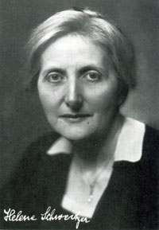
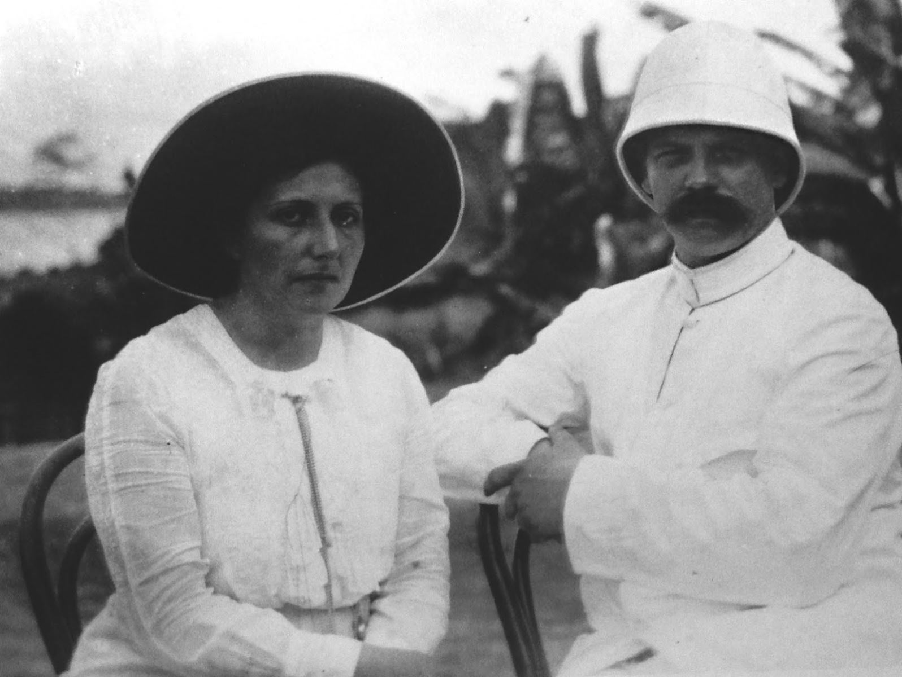

Danh tiếng của Albert Schweitzer đã vang khắp thế giới, nhưng có ai nhớ tới tên của Hélène Bresslau không? Có cả triệu người quen thuộc hình dáng mạnh mẽ của ông, suốt đời bận một bộ đồ đen với chiếc sơ mi trắng cổ cứng gẫu thắt cái “nơ” đen.
Nhưng còn bà? Có ai nhớ vẻ mảnh mai của bà đứng nép bên cạnh ông hoặc cúi xuống săn sóc một em gái tóc hung hung không? Vậy mà công của bà đâu có kém công của ông!
Năm 1904, Albert Schweitzer ở đại học Strasbourg ra, đậu hạng cao. Hồi đó ông đã gần ba mươi tuổi, làm việc gì cũng thành công, và mới gặp Hélène Bresslau, nhỏ hơn ông vài tuổi. Bà là con gái một người Do Thái Alsace, khoa trưởng khoa Sử ở Đại học.
Bà học môn Sư phạm xã hội học, muốn thành một Giáo sư. Đó chỉ là mục tiêu gần chứ chưa phải là mục tiêu tối hậu của bà. Dạy học cũng là một việc thích thú đấy, nhưng hoạt động xã hội còn say sưa hơn và có một khu vực rộng rãi hơn.
Schweitzer và Hélène Bresslau mới đầu chỉ coi nhau là bạn học; họ đều đứng đắn, thông minh, sở thích như nhau, nên thường gặp nhau để nói chuyện về sách vở. Nhưng chẳng bao lâu họ thấy có những tư tưởng như nhau, tâm linh như nhau, nên thân với nhau hơn. Và dĩ nhiên, một hôm họ tính tới chuyện sống chung.
Hình như trời sinh ra hai ông bà để hiểu nhau, bổ túc lẫn nhau. Ông đã bị một dự định ám ảnh, không thổ lộ được với ai cả, trừ bà ra.
Dự định đó thật lạ lùng, ngoài ông ra không ai có thể nghĩ tới, nhưng nó lại rất hợp với lý tưởng của bà, với niềm khát khao của bà vẫn muốn thực hiện được cái gì cụ thể cho nhân loại.
Albert Schweitzer lúc này làm Giáo sư Đại học, chơi phong cầm có tiếng mà viết văn cũng nổi danh.
Vậy mà ông bỏ hết cả các hoạt động đó, muốn làm y sĩ ở miền Xích đạo châu Phi, nơi mà trên mấy trăm cây số không có một trạm y tế nào cả. Muốn vậy ông phải trở lại Đại học, học một ngành khác.
Thấy ông bỗng nhiên bỏ một nghề có tương lai rực rỡ như vậy, có nhiều người ngạc nhiên, không hiểu ông, hơi bực mình cho ông nữa.
Đầu năm 1913, Hélène đậu bằng cấp nữ điều dưỡng và Schweitzer đậu bác sĩ y khoa. Nhưng ông còn phải gom góp một số tiền làm lộ phí và để cất dưỡng đường ở Lambaréné (châu Phi) nữa chứ. Ông ghi trong nhật ký: “Công việc của tôi phải vượt ra khỏi tôn giáo mà có tính cách quốc tế”.
Và buổi chiều ngày lễ Thăng Thiên, bác sĩ Schweitzer cùng với vợ rời Gunsbach, nơi ông bà đã sống biết bao ngày êm đềm, âu yếm, để qua châu Phi.
Hồi đó đương mùa xuân, không khí mát mẻ ở miền Vosges thoang thoảng hương thơm của các cây ăn trái.
Cò đã bắt đầu làm tổ trên nóc nhà và giáo đường.
Các cây nho hồi sinh lại dưới ánh nắng ấm áp, cây hốt bố (houblon) bắt đầu leo lên giàn dưới nền trời lác đác mấy đám mây trắng.
Ánh sáng chập chờn trong khu rừng.

Bà Hélène Bresslau Schweitzer
Chuyến xe lửa vùn vụt băng qua, bao nhiêu hình ảnh linh động êm đềm kia, trong nháy mắt đã chỉ còn trong ký ức.
Thôi, vĩnh biệt Alsace để tới Lambaréné.
Chiếc tàu Alembé, rộng nhưng đáy bằng để có thể chạy cả trong mùa nước cạn, đã lướt trên sông Ogooué năm giờ rồi, bây giờ nổi còi lên nghe đinh tai, và từ từ ghé bến. Đa số hành khách và hàng hóa sẽ qua những chiếc thuyền độc mộc để tiếp tục đi nữa, trên những chi nhánh của sông Ogooué mà tàu lớn chạy không được. Albert và Hélène cũng xuống thuyền độc mộc để tới Lambaréné nơi có ba ngọn đồi hiện lên ở chân trời. Nóng như nung như nấu. Bảy mươi mốt thùng chứa thuốc cùng đồ đạc của ông bà và chiếc đàn piano chế tạo riêng để chịu được khí hậu miền nhiệt đới sẽ tới bằng chuyến tàu sau. Chiếc piano đó Hội Bạch ở Paris đã tặng ông bà làm kỷ niệm. Bà Hélène có vẻ mệt mỏi vì khí hậu nóng quá, còn ông thì mồ hôi chảy ròng ròng trên mặt; nhưng cả hai đều hoan hỉ. Kìa, một chiếc thuyền độc mộc lớn đã tới để chở ông bà tới Lambaréné.
Lần đó là lần đầu tiên ông bà ngồi thứ thuyền đó. Phải ngồi yên và thật thăng bằng vì chỉ nhích mình một chút là nó tròng trành. Trạo phu, đứng trong thuyền, cầm những cây chèo dài quậy nước theo nhịp hát.
Tới đây là hết dẩu vết của văn minh. Rừng hoang hoàn toàn làm chúa tể.
Thổ dân đã dọn dẹp một căn nhà để đón ông bà. Các em trong Hội Truyền giáo đã lấy lá dừa lá cọ và hái bông để trang hoàng. Nhà có bốn căn nhỏ xíu, chung quanh bốn bề là mái hiên. Tối đên, họ giăng đèn giấy cho thêm long trọng.
Ở dưới sâu, đằng xa kia, sông Ogooué trải ra như một vũng nước lớn lấp lánh. Dế đâu mà nhiều thế, kêu ra rả khắp nơi.
Ông bà Schweitzer vừa bước qua cửa căn nhà mới của mình vừa ngó nhau mỉm cười, cảm động, nghiêm trang nhưng trong cặp mắt cũng bừng lên một tia hài hước, tinh thần hài hước đó, ông bà giữ được suốt đời. Họ thu dọn chồ ở, mà say mê cảnh đẹp đẽ mới lạ ở chung quanh.
Bỗng bà kinh hoảng, thốt lên một tiếng kêu: một con nhện khổng lồ - thứ nhện này chích ai thì thế nào cũng sưng vù lên - ở đâu mới bò vào căn phòng của bà. Đêm Phi châu còn nhiều cái khủng khiếp hơn vậy nữa, thứ nhện đó đã thấm vào đâu.

Ông bà Schweitzer
Ông Schweitzer đuổi bắt nó một hồi sôi nổi, vừa mới chận được nó, liệng nó đi, thì ông cố đạo lại mời ông qua nhà ông dùng bữa tối.
Họ ngồi ăn dưới mái hiên, nơi đó treo những chiếc đèn giấy sặc sỡ đủ màu. Các trẻ em trong hội Truyền giáo đều tới đủ. Chúng hát lên một điệu bình dân Thụy Sĩ do một ông cố đạo dạy, rồi ngâm lên những câu thơ chúc tụng ông bà mà người đã làm rồi dạy chúng học.
Sau này, các thành phổ ở Âu Mỹ đều niềm nở tiếp đón bác sĩ Schweitzer. Khắp thế giới đều chú ý tới dưỡng đường ở Lambaréné mà ông đã gắng sức điều khiển trong bao năm. Nhưng ông bà không thích cuộc tiếp đón nào bằng cuộc tiếp đón ngây thơ mà ý nhị, phát tự đáy lòng bọn trẻ này.
Cũng không có căn nhà nào đối với ông bà mà có nhiều hứa hẹn như căn nhà tồi tàn kết hoa kết lá đó, tồi tàn nhưng đã được dọn dẹp, trang trí đàng hoàng, căn nhà mà đêm đầu, sau một cuộc hành trình mệt nhọc ông bà phải thấy những con nhện gớm ghiếc đuổi bắt những con gián bay vù vù.
Ngay từ hôm sau, ông bà đã phải một mình đương đầu với biết bao nỗi khó khăn mà chỉ một nồi nhỏ nhất thôi cũng đủ làm cho nhiệt tâm của những người rất có thiện chí phải nguội lạnh.
Người ta đã dành cho ông một căn để tiếp bệnh nhân, nhưng căn đó chưa thể dùng được. Nó chỉ như một cái chuồng gà mục nát. Mái đã bể mà sân thì đầy rác rưới.
Thôi thì trong khi chờ đợi, hãy tạm coi mạch ở giữa trời vậy; Làm việc giữa trời dưới ánh nắng như thiêu này, thì mau kiệt sức lắm đấy; nhất là miền này chiều nào cùng đổ mưa thình lình, phải giải tán đám bệnh nhân và gom góp đồ đạc, dụng cụ, khiêng vào nhà nội trong mấy phút.
Nghề nào mà chẳng vậy, có khó khăn, cực nhọc, nhưng cũng có phần hứng thú. Đành vậy rồi, nhưng chẳng có gì cả mà phải xây dựng lên hết thảy, lúc nào cũng thấy thiếu dụng cụ, cái đó mới thực là gian nan, ít ai vượt nổi.
Chính trong những hoàn cảnh như vậy mà ông bà Schweitzer, cương quyết lạc quan, bắt đầu khám bệnh, săn sóc thổ dân ở giừa rừng, mà chỉ có mỗi một người da đen tiếp tay, người này vừa làm y tá vừa làm thông ngôn. Chú ta trước kia làm bếp, nhưng tuổi già sức suy, không thể cặm cụi trên bếp lửa được nữa vì nóng quá. Chú chẳng những nói thông tiếng Pháp, tiếng Anh mà còn biết tám thổ ngữ trong miền. Tên chú là Joseph và sau này chú thành một nhân viên quan trọng, kỳ khôi của dưỡng đường Lambaréné.
Trong khi nói chuyện, nhớ nghề cũ, chú thường dùng những hình ảnh trong bếp, bà Schweitzer cho là ngộ nghĩnh. Chẳng hạn chú bảo chú đau ở “khúc thịt đùi bên phải”, hoặc bảo bệnh nhân nọ “đau ở thịt sườn bên trái, và trong chỗ thịt phi-lê” (filet).
Hồi đó, tâm hồn bác sĩ Schweitzer rất thanh thản. Ông ghi trong nhật ký: “làm y sĩ ở giữa rừng không phải là một việc mạo hiểm, bi đát, buồn rầu, hoặc chán nản. Công việc tuy khó khăn thật, nhưng hứng thú lạ lùng...”.
Về phần bà, đã phải làm y tá giúp ông suốt ngày, lại còn phải trông nom nhà cửa nữa, mà nhà ở giữa rừng, dễ gì kiếm được lương thực, kiếm được thì cũng khó giữ vì dưới ánh nắng gay gắt, chung quanh có biết bao sâu bọ đủ loại đó, thức ăn nào cũng hư thối rất mau.
Sau mấy tuần, ông đã hốc hác trông thấy, mà bà thì đã suy nhược rồi. Bà không chịu nổi khí hậu đó. Cả hai ông bà đều kiệt lực mà vẫn rán làm bộ dẻo dai. vui vẻ để nâng đỡ lẫn nhau.
Không thể nào coi mạch giữa trời được nữa, dù là ở dưới bóng cây, vì ánh nắng phản xạ cũng đủ giết người được. Schweitzer bèn quyết định quét cọ chuồng gà, dùng tạm nó vậy. Ông bắt tay vào việc, được bà, chú y tá thông ngôn và vài thiếu niên ở hội Truyền giáo giúp sức.
Một y sĩ dễ tính tới đâu cũng không khi nào chịu hành nghề trong cái chuồng gà thiếu thốn đủ thứ đó.
Nhưng ít nhất ông bà cũng có được một cái mái để che thân, che thuốc và các dụng cụ trong những cơn mưa rào hằng ngày, mặc dầu mái dột chưa giọi lại được, ban ngày phải đội nón mà làm việc.
Ông bà làm việc từ sáng sớm tới tối. Vì dưỡng đường không có màn lưới gì để che muỗi độc, nên không đốt đèn mà làm việc ban đêm được.
Đêm tối, một làn sương mù nặng nề, nghẹt thở bao phủ sông Ogooué. Các sinh vật trong khu rừng hoang lén lút, hồi hộp đi săn mồi; bà Hélène ngồi mơ mộng trên một cái thùng lật úp dưới mái hiên, con chó vàng Caramba, dáng điệu như chó rừng, nằm cuốn tròn ở bên cạnh.
Nó thích theo bà hơn theo ông, còn con Okuren, con sơn dương đầu tiên ông bà bắt về nuôi thì trái lại, không chịu xa ông một bước. Con này không lớn hơn loài chó Poméranie là bao, lăng xăng suổt ngày, không lúc nào ở yên, thành thử bản thảo cùng
nhạc phổ, phải treo cao lên để cho nó khỏi đớp mà ngấu nghiến nuốt hết.
Hélène mới ngày nào còn là sinh viên Đại học Strasbourg, bây giờ ngồi trong bóng tối ở giữa rừng nơi cô quạnh này mà cảm thấy trong lòng hoàn toàn bình tĩnh. Bà đã kết họp đời sống của mình với đời sống con người siêu quần mà bà yêu, và cùng hăng
hái chiến đấu bên cạnh ông.
Khí hậu miền này rất độc, người Âu nào qua ở đây hai năm liền mà không về quê hương nghỉ một thời gian lâu thì không chịu nổi, nhưng bà coi thường tất cả, hễ còn chịu đựng được thì còn ở lại giúp ông hoài.
Danh tiếng ông bà nổi lên như cồn, nhưng danh càng lớn, tư cách ông càng cao thì ông càng gặp những tai biến như để thử thách ông. Gần như ngày nào ông cũng phải dùng đến trí thông minh, lòng can đảm cho hiệu năng tăng thêm.
Thế chiến 1914 - 1918 làm cho công trình của ông đổ vỡ hết, năm 1919 sau khi sanh cô Rhéna, ngày 14 tháng Giêng (cũng là sanh nhật của ông) ông bà lại quyết tâm cùng nhau xây dựng lại. Cô Rhéna sau này lấy một người Thụy Sĩ tên là T. A. Eckert, và năm 1948, đã cho ông bà được bốn đứa cháu ngoại.
Nhưng trước khi trở qua Phi châu, lại phải gom góp một số tiền đã. Schweitzer tổ chức các buổi hòa nhạc ở Y Pha Nho, Anh và Thụy Điển, người ta mời ông tới hòa nhạc đã từ lâu. Thụy Điển khí hậu tốt, là nơi tĩnh mịch, nghỉ ngơi được để lấy lại sức. Xứ đó thời ấy vừa tiến bộ nhất lại vừa thủ cựu nhất, đời sống vui vẻ lành mạnh, gây cho ông bà một ấn tượng, mát mẻ, nên thơ.
Em Rhéna mỗi ngày mỗi lớn. Ông bà đã đứng tuổi, nhận định được hết cái vui có con, cái vui thấy trẻ thay đổi từng ngày như một phép mầu; nên quí mến em lắm. Nhưng tới tháng hai năm 1924, ông bà đã thu thập được đủ tiền để trở qua Lambaréné, bây giờ phải quyết định làm sao đây? Đành phải chia tay nhau vậy, đau xót quá. Bà và cô Rhéna hãy còn yếu, phải ở lại Châu Âu hai năm, tức suốt thời gian ông qua Châu Phi. Một bên là Châu Phi với các người cùi, các bệnh nhân; một bên là vợ và con, mà hai bên cách nhau mấy ngàn cây số. Schweitzer viết: “Tôi luôn luôn mang ơn nhà tôi đã chịu hy sinh trong hoàn cảnh đó để cho tôi tiếp tục lại công việc ở Lambaréné... Lúc nào tôi cũng thâm tạ tấm lòng đó của nhà tôi...”.
Sau này khi bà qua thăm ông được thì Lambaréné không còn như hồi mấy năm đầu nữa: trong khi bà vì sức khỏe của mình, sức khỏe và sự giáo dục của con, phải ở lại Châu Âu thì dưỡng đường Lambarốné đã thành một thị trấn nhỏ, thuyền và ghe máy qua lại mỗi ngày một nhiều trên sông Ogooué và nhiều nhân viên từ khắp nơi trên thế giới lại dưỡng đường giúp việc.
Rồi thế chiến thứ nhì phát sinh.
Dưỡng đường không còn liên lạc được với thế giới bên ngoài nữa, lại sông thoi thóp trong một giai đoạn lo âu. Các y sĩ và nữ y tá lần lượt bị chính phủ trưng dụng hết, sau cùng chỉ còn lại bác sĩ Schweitzer với nữ bác sĩ Anna Wildikann. Cả hai đều phải chịu những nồi cực nhọc như mấy năm đầu.
Thấy chồng ở trong cảnh khó khăn, Hélène quyết tâm qua thăm ông. Đương chiến tranh, ra khỏi xứ đâu có dễ gì, mà bà làm được một phép mầu, tới được Lisbonne, rồi vượt qua được Angola, thuộc địa Bồ Đào Nha ở miền xích đới Châu Phi và tới Lambaréné ngày mùng 2 tháng tám năm 1941.
Hết chiến tranh, nhà văn George Seaver của Anh, người viết tiểu sử Albert Schweitzer, yêu cầu bà kể lại cuộc mạo hiểm gan dạ lạ lùng đó; bà kể rồi kết luận bằng mấy hàng này nó biểu lộ rõ cá tính của bà còn hơn những trang dài dằng dặc nữa:
“Khi tới nơi, tôi thấy rằng tôi là người đầu tiên - mà theo chỗ tôi biết, cũng là người duy nhất từ 1940 - đã từ Pháp mà qua được xứ Gabon(1) một cách hợp pháp. Trong đời tôi, như có phép mầu, tôi đã được bao nhiêu người giúp đỡ, đối với tôi rất nhã nhặn, tôi tự xét là không xứng đáng để nhận, mà hầu hết những vị đó là những người ngoại quốc.
Một lần nữa, tôi xin thâm tạ các vị đã giúp tôi chịu nổi được những nỗi vừa buồn vừa gian nan đó...”.
Rồi bà nói thêm về ông như sau:
“Chúng tôi làm bạn với nhau và cùng làm việc với nhau tới nay đã được bốn mươi ba năm. Chúng tôi gặp nhau ở điểm này là cùng có ý thức về trách nhiệm nặng nề đối với nhân loại vì trong đời, chúng tôi đã được hưởng biết bao ân huệ của xã hội. Do đó mà chúng tôi cảm thấy có bổn phận phải giúp đỡ người khác. Tôi tự cho là một niềm vui và một nguồn vinh dự trong đời đã được theo giúp nhà tôi trong mọi hoạt động của nhà tôi. Tôi chỉ ân hận mỗi một điều là không đử sức để theo kịp nhà tôi được. Nhưng ngay như nhà tôi nữa, mặc dầu khỏe mạnh, lực lưỡng lạ lùng như vậy mà vì làm việc cực nhọc không ngừng trong bấy nhiêu năm, bây giờ cũng cần phải được nghỉ ngơi hoàn toàn trong một thời gian lâu. Nhà tôi đã làm việc ở đây chín năm liền, không được nghỉ cũng không có ai giúp đỡ. Ước sao chiến tranh tai hại này chấm dứt rồi, toàn thể nhân loại bắt đầu được sống trong những hoàn cảnh tốt đẹp hơn!”.
Nhưng mặc dầu rất can đảm, lần này bà cũng không chịu nổi cảnh cực nhọc cùng khí hậu ở Châu Phi và bà lại phải rời Lambaréné mà trở về Châu Âu. Lần này thì không hy vọng trở lại được nữa. ít nhất là trở lại trong đời bà.
Năm 1957, bà Hélène Schweitzer tắt nghỉ trong một dưỡng đường ở Zurich (Thụy Sĩ). Xác bà được đưa qua Lambaréné. Gần như không ai hay tin đó cả. Thế giới chỉ ngưỡng mộ Albert Schweitzer mà quên không nghĩ tới bà, dù là chỉ một chút: mà không có bà thì chắc gì ông đã thành vị bác sĩ Da trắng Đại danh được(2).
Chú thích:
(1) Lambaréné ở xứ Gabon thời đó là một thuộc địa của Pháp.
[2] Ông mất tám năm sau (tháng 8 năm 1965), thọ 90 tuổi, vì sanh ngày 14 tháng Giêng năm 1875 ở Kayserberg ở Thượng Alsace. Ông có viết một cuốn tự truyện nhan đề là À l'orée de la Foret vierge. Club de la Femme 222 Bd. Saint Germain - Paris.